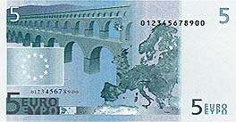

“Jésus-Christ est le même hier, aujourd’hui, et éternellement” (Hébreux 13.8).
LETTRE CIRCULAIRE N° 53
FEVRIER 2002
Bien-aimés en Christ, élus de Dieu et dispersés sur toute la terre, je vous salue dans le saint et précieux Nom de notre Seigneur et Sauveur Jésus-Christ. Afin quà Son retour nous soyons enlevés dans la gloire, notre préparation est la chose la plus importante, car il est écrit: et celles qui étaient prêtes entrèrent avec lui aux noces (Mat. 25.10b). et sa femme sest préparée (Apoc. 19.7b).
Deux passages bibliques nous accompagneront dans ce court exposé: Je ne vous ai pas écrit parce que vous ne connaissez pas la vérité, mais parce que vous la connaissez et quaucun mensonge ne vient de la vérité (1 Jean 2.21).
Nous, nous sommes de Dieu; celui qui connaît Dieu nous écoute; celui qui nest pas de Dieu ne nous écoute pas; à cela nous connaissons lesprit de vérité et lesprit derreur (1 Jean 4.6).
Comme dans chacune des prédications servant à notre instruction, ainsi que dans tous nos livres, dans cette lettre circulaire aussi nous laisserons habiter richement au milieu de nous la Parole de Dieu. Deux choses sont placées devant nos yeux dès le commencement: la Parole, telle quElle vint par la bouche du Tout-Puissant, et linterprétation telle quelle fut chuchotée par le serpent ancien. La Parole est Esprit et Vie, linterprétation est un poison apportant la mort. Ceux qui croient réellement comme le dit lEcriture (Jean 7.38) et qui demeurent dans la Parole de Vérité (Jean, chapitre 15) sont les véritables enfants de Dieu. Les autres, qui courent derrière chaque interprétation, sont la semence mélangée. Le vrai et le faux, la bonne et la mauvaise compréhension des Ecritures, ont tout le long accompagné dabord lhumanité de façon générale, puis Israël et plus tard lEglise, et jusquà la fin il en sera ainsi.
Avant tout, la Parole est la Semence (Luc 8.11) et lon ne mettra jamais assez laccent sur cela. Si la Semence de la Parole germe, elle sera manifestée dans les fils du Royaume de Dieu (Mat. 13.38a). Livraie, ce sont les fils du méchant (Mat. 13.38b). Deux semeurs différents ont semé deux semences fondamentalement différentes qui poussèrent toutes deux sur le même champ. Au temps de la moisson les grains de blé seront rassemblés dans les greniers célestes, livraie qui a vécu de la même pluie et mûri sous le même soleil sera brûlée (Mat. 13.30).
Lavertissement donné par Dieu de ne pas expliquer ni interpréter ce que Dieu a dit, doit être pris au sérieux. Au commencement était la Parole; linterprétation est venue seulement plus tard. Lapôtre Jean commence sa première épître ainsi: Ce qui était dès le commencement, ce que nous avons entendu, ce que nous avons vu de nos yeux, ce que nous avons contemplé et que nos mains ont touché, concernant la parole de la vie (et la vie a été manifestée; et nous avons vu, et nous déclarons, et nous vous annonçons la vie éternelle, qui était auprès du Père et qui nous a été manifestée) (1 Jean 1.1,2).
Le Nouveau Testament commença avec laccomplissement des prophéties de lAncien Testament. Dans les quatre Evangiles, nous trouvons la description de notre Rédempteur, de Sa naissance à Son ascension dans le ciel. Dieu avait promis de conclure une nouvelle alliance, de nous donner un nouveau coeur, un nouvel esprit et une nouvelle vie. Dans le Nouveau Testament, nous en expérimentons laccomplissement. Jean-Baptiste était selon Esaïe 40.3 et Malachie 3.1 un prophète promis. Lorsque le temps fut accompli, Dieu veilla sur Sa Parole, envoya lange Gabriel à Zacharie pour lui annoncer la naissance du précurseur de Christ. Et il fera retourner plusieurs des fils dIsraël au Seigneur leur Dieu. Et il ira devant lui dans lesprit et la puissance dElie, pour faire retourner les coeurs des pères vers les enfants, et les désobéissants à la pensée des justes, pour préparer au Seigneur un peuple bien disposé (Luc 1.16,17).
Dans Matthieu 3.1,2 et 11.7-14, notre Seigneur confirme laccomplissement de la prophétie par le ministère de Jean-Baptiste, lequel Lui prépara le chemin. Dans Marc 1.1-3 les deux passages de lAncien Testament sont cités directement au commencement. Nous trouvons une confirmation supplémentaire dans la prophétie de Zacharie (Luc 1.67-80).
Dans le premier chapitre de lEvangile de Jean, il est demandé à Jean lui-même, lhomme envoyé de Dieu: Toi, qui es-tu? Et il confessa, et ne nia pas, et confessa: Moi, je ne suis pas le Christ. Et ils lui demandèrent: Quoi donc? Es-tu Elie? Et il dit: Je ne le suis pas. Es-tu le prophète? Et il répondit: Non. Ils lui dirent donc: Qui es-tu, afin que nous donnions réponse à ceux qui nous ont envoyés? Que dis-tu de toi-même? Il dit: Moi, je suis la voix de celui qui crie dans le désert: Faites droit le chemin du Seigneur, comme dit Esaïe le prophète (Jean 1.19-23).
Les écrivains des Evangiles, sous la direction du Saint-Esprit, ont mis laccent sur laccomplissement des prophéties de lAncien Testament. Luc commence de la manière suivante: Puisque plusieurs ont entrepris de rédiger un récit des choses qui sont reçues parmi nous avec une pleine certitude, comme nous les ont transmises ceux qui, dès le commencement, ont été les témoins oculaires et les ministres de la parole, il ma semblé bon à moi aussi, qui ai suivi exactement toutes choses depuis le commencement, très-excellent Théophile, de te les écrire par ordre, afin que tu connaisses la certitude des choses dont tu as été instruit (Luc 1.1-4).
Au commencement, les hommes de Dieu étaient des témoins oculaires et ils pouvaient transmettre ce quils avaient vu, entendu et expérimenté. Cependant ils nétaient pas seulement de simples chroniqueurs, mais ils étaient avant tout des serviteurs de la Parole et en avaient reçu de Dieu une parfaite compréhension. Ils ont tout ordonné selon lEcriture et cest ainsi quils nous lont laissée.
Lapôtre Pierre, un des principaux témoins lors de la première venue de notre Seigneur, écrit également au sujet de Son retour: Car ce nest pas en suivant des fables ingénieusement imaginées, que nous vous avons fait connaître la puissance et la venue de notre Seigneur Jésus-Christ, mais comme ayant été témoins oculaires de sa majesté Et nous avons la parole prophétique rendue plus ferme, à laquelle vous faites bien dêtre attentifs, comme à une lampe qui brille dans un lieu obscur, jusquà ce que le jour ait commencé à luire et que létoile du matin se soit levée dans vos coeurs, sachant ceci premièrement, quaucune prophétie de lécriture ne sinterprète elle-même. Car la prophétie nest jamais venue par la volonté de lhomme, mais de saints hommes de Dieu ont parlé, étant poussés par lEsprit Saint (2 Pier. 1.16-21). Au temps de laccomplissement, la Parole révélée brille comme une lumière vive dans les ténèbres religieuses.
Lapôtre Jean mentionne, il est vrai, le ministère du messager, du précurseur, mais il fait de Christ, la Parole faite chair, son thème principal. Un véritable serviteur de Dieu annonce la Parole, mais cependant Christ est la Parole. Un homme envoyé par Dieu nous indique le chemin, mais cependant Christ est le chemin. Un apôtre peut porter à dautres la Lumière reçue, mais Christ est la Lumière. Les prédicateurs peuvent parler de la résurrection, mais Christ est la Résurrection et la Vie.
Dieu fait toutes choses conformément à Sa Parole. Cest en Elle que Ses voies et Sa volonté sont révélées. Celui qui a véritablement reçu un ministère par appel divin, recevra lui-même en premier lieu la compréhension divine parfaite pour la parfaite Parole de Dieu, et ensuite il pourra La mettre en parfait ordre avec le parfait plan du salut. Dès le premier chapitre de Matthieu nous pouvons suivre les traces qui ont été laissées, cest-à-dire voir de quelle manière toutes choses se sont accomplies conformément aux prophéties. Cest de cette façon quest exprimé ce qui est divin et convaincant dans le Nouveau Testament, de sorte que 109 prophéties (v. Dr. C. Larkin DISPENSATIONAL TRUTH) de lAncien Testament sont confirmées dans le Nouveau Testament comme accomplies.
Lorsque Christ, le Sauveur, est né, nous trouvons dans Matthieu 1.22 cette parole: Or tout cela arriva afin que fût accompli ce que le Seigneur a dit par le prophète, disant (Es. 7.14).
En rapport avec le lieu de naissance il est écrit: Et ils dirent: A Bethléhem de Judée; car il est ainsi écrit par le prophète (Mat. 2.5; Mich. 5.1).
En rapport avec Son séjour en Egypte il nous est dit: Et il fut là jusquà la mort dHérode, afin que fût accompli ce que le Seigneur avait dit par le prophète, disant: Jai appelé mon fils hors dEgypte (Mat. 2.15; Osée 11.1).
En relation avec le meurtre des petits enfants par Hérode, il est dit: Alors fut accompli ce qui a été dit par Jérémie le prophète disant (Mat. 2.17; Jér. 31.15).
Matthieu écrit au sujet du domicile de Jésus à Capernaüm: Et ayant quitté Nazareth, il alla demeurer à Capernaüm, qui est au bord de la mer, sur les confins de Zabulon et de Nephthali, afin que fût accompli ce qui avait été dit par Esaïe le prophète (Mat. 4.13,14; Es. 9.1,2).
Dans Luc 4 notre Seigneur, après avoir lu dans le prophète Esaïe, déclara ensuite: Aujourdhui cette écriture est accomplie, vous lentendant (Luc 4.21; Es. 61.1,2). De Sa naissance jusquaux derniers instants de Sa vie saccomplirent les Saintes Ecritures.
Lors de Son chemin Le conduisant à Golgotha nous lisons plusieurs fois dans Jean, chapitre19: afin que lécriture fût accomplie, qui dit (Jean 19.24; Ps. 22.17-19).
Après cela Jésus, sachant que toutes choses étaient déjà accomplies, dit, afin que lécriture fût accomplie: Jai soif (Jean 19.28-30; Ps. 69.21).
Car ces choses sont arrivées afin que lécriture fût accomplie: Pas un de ses os ne sera cassé (Jean 19.36; Ps. 34.20).
Et encore une autre écriture dit: Ils regarderont vers celui quils ont percé (Jean 19.37; Zach. 12.10). Dans les dernières 24 heures précédent Sa mort saccomplirent en Lui exactement 24 prophéties.
LE SEIGNEUR PARLE AVEC NOUS
Dans Luc 24.27-45, nous trouvons lexemple de ce qui arrive si nous marchons réellement avec notre Seigneur, et sIl peut parler avec nous: Et commençant par Moïse et par tous les prophètes, il leur expliquait, dans toutes les écritures, les choses qui le regardent Et leurs yeux furent ouverts, et ils le reconnurent Et ils dirent entre eux: Notre coeur ne brûlait-il pas au dedans de nous, lorsquil nous parlait par le chemin, et lorsquil nous ouvrait les écritures? Et il leur dit: Ce sont ici les paroles que je vous disais quand jétais encore avec vous, quil fallait que toutes les choses qui sont écrites de moi dans la loi de Moïse, et dans les prophètes, et dans les psaumes, fussent accomplies. Alors il leur ouvrit lintelligence pour entendre les écritures.
Jésus-Christ, notre Seigneur, est le Même de toute manière. Ce quIl fit en ce temps-là et ce quexpérimentèrent Ses disciples et lEglise du Nouveau Testament au commencement doit être aujourdhui notre expérience. Toute prophétie concernant notre Seigneur et Sauveur a été vue dans son accomplissement. Lapôtre Paul le résume ainsi: Car je vous ai communiqué avant toutes choses ce que jai aussi reçu, que Christ est mort pour nos péchés, selon les écritures, et quil a été enseveli, et quil a été ressuscité le troisième jour, selon les écritures (1 Cor. 15.3,4).
Lors de la fondation de lEglise du Nouveau Testament, par leffusion du Saint-Esprit (Actes chap. 2), saccomplit la promesse de Joël 2.28-32.
Nous vivons encore maintenant dans les jours de la Bible. Le Fils de lhomme marche encore au milieu des sept lampes dor. Maintenant, avant le retour de Jésus-Christ, le même modèle biblique demeure valable comme autrefois. Un serviteur de Dieu, ayant reçu un mandat direct de Lui, a comme devoir le plus grand dordonner conformément aux Ecritures tout ce qui concerne le Royaume de Dieu. Cela nous remplit dune joie inexprimable que nos frères, au commencement, dans le Nouveau Testament, aient cité en tout 845 fois des passages de lAncien Testament, et que de cette manière ils ont établi lhistoire du salut sur un fondement biblique. Cela montre quelle importance ils ont attribué à la Parole de Dieu. LEglise du Nouveau Testament est édifiée sur le fondement des apôtres et des prophètes, dans laquelle Jésus-Christ est la Pierre de langle ainsi que la Pierre du faîte (Eph. 2.20; Zach. 4.6,7).
Toute véritable doctrine est fondée sur la Parole de Dieu; toute fausse doctrine est basée sur des interprétations. Tout ce qui est relié au plan du salut de Dieu a été annoncé à lavance dans une prophétie biblique et ne permet aucune interprétation propre. Lapôtre Jean dit clairement quaucun mensonge na son origine dans la vérité, et que: quiconque est né de Dieu ne pratique pas le péché, car la semence de Dieu demeure en lui (1 Jean 3.9). De même, il écrit au sujet de la Vérité qui demeure en nous et qui sera avec nous à jamais (2 Jean v. 2). Amen!
Comme nous le savons, tout ce qui a été dit à lavance et a été prophétisé concernant la première venue de notre Seigneur et Sauveur, sest alors accompli. Cela concerne également la période avant Son retour. Toute Parole de Dieu doit déboucher dans sa réalisation. Quand le temps est arrivé, il ne sagit plus dune doctrine ou dune soi-disant révélation, mais bien de laccomplissement dans la réalité. La naissance de Christ était une pure réalité, Sa vie et Son ministère, Ses souffrances et Sa mort, Sa résurrection et Son ascension étaient des réalités et il en sera de même de Son retour, de la résurrection, de la transmutation et de lenlèvement des Siens: ce seront des réalités vécues. Tout arrivera comme il est écrit et a été promis.
La promesse: Voici, je vous envoie Elie, le prophète, avant que vienne le grand et terrible jour de lEternel (Mal. 4.5) devait aussi saccomplir maintenant, comme notre Seigneur lavait confirmé en son temps pour lavenir: En effet, Elie vient premièrement, et il rétablira toutes choses (Mat. 17.11; Marc 9.12). Ce que notre Seigneur a annoncé dans Luc 17.22-30, devait maintenant également saccomplir. Le Fils de lhomme sest Lui-même révélé de la même manière que cela est arrivé dans les jours de Sa chair par le parfait ministère prophétique et le signe du Messie. Actes 3.18-21 renferme une des principales promesses pour lEglise, et elle doit avoir son accomplissement. Dieu est lié à Sa Parole qui est denvoyer des temps de rafraîchissement avant le retour de Christ, car il est ainsi écrit: lequel il faut que le ciel reçoive, jusquau temps du rétablissement de toutes choses dont Dieu a parlé par la bouche de ses saints prophètes de tout temps (Actes 3.21). Cest AINSI DIT LETERNEL dans Sa Parole. Premièrement le rétablissement doit avoir lieu, et ensuite le Seigneur vient en tant quEpoux chercher lEglise-Epouse qui sera sans tache ni ride (Eph. 5.27), et Il La prendra dans la gloire (1 Thess. 4.17). Il faut aussi que toutes les prédictions pour Israël soient vues dans la lumière de la Parole prophétique. Le retour dIsraël dans le pays de ses pères nest pas seulement un signe entre plusieurs, mais bien le signe que le Seigneur nous a présenté dans le symbole du figuier qui vient de nouveau à la vie (Es. 14.1; Jér. 31.10; Ezé. 36.24; Mat. 24.32; Luc 21.24). Tout véritable fils et fille de Dieu se trouve être enfant de la promesse, comme létait Isaac (Gal. 4.28), il croit la Parole de la promesse et reçoit lEsprit Saint promis (Actes 2.33).
LE GLORIEUX EVENEMENT
Dans Jean, chapitre 14, le Seigneur a promis de sen aller nous préparer une place, puis de revenir et de nous prendre auprès de Lui (v. 1-3).
Dans Luc 24.39 Il se révéla à Ses disciples après Sa résurrection, et Il leur dit: Voyez mes mains et mes pieds; que cest moi-même; touchez-moi, et voyez; car un esprit na pas de la chair et des os, comme vous voyez que jai.
Après que le Seigneur ait enseigné Ses apôtres sur toutes choses, Il leur donna la charge daller dans le monde entier et denseigner tous les peuples conformément à ces choses. Et il les mena dehors jusquà Béthanie, et, levant ses mains en haut, il les bénit. Et il arriva quen les bénissant, il fut séparé deux, et fut élevé dans le ciel (Luc 24.50,51).
Notre Seigneur et Sauveur est ressuscité corporellement et Il dit à Marie de Magdala: Ne me touche pas, car je ne suis pas encore monté vers mon Père; mais va vers mes frères, et dis-leur: Je monte vers mon Père et votre Père, et vers mon Dieu et votre Dieu (Jean 20.17). Il est allé dans Son Corps de résurrection au Ciel et Il reviendra de la même façon, afin dintroduire dans la gloire tous les fils et filles de Dieu. Ce Jésus, qui a été élevé davec vous dans le ciel, viendra de la même manière que vous lavez vu sen allant au ciel (Actes 1.11).
Lapôtre Paul parle du retour de Christ et de la transmutation de notre corps naturel en un corps de résurrection. Il écrit: Ainsi aussi est la résurrection des morts: il est semé en corruption, il ressuscite en incorruptibilité; il est semé en déshonneur, il ressuscite en gloire; il est semé en faiblesse, il ressuscite en puissance; il est semé corps animal, il ressuscite corps spirituel. Sil y a un corps animal, il y en a aussi un spirituel; cest ainsi quil est aussi écrit: Le premier homme Adam devint une âme vivante, le dernier Adam, un esprit vivifiant. Mais ce qui est spirituel nest pas le premier, mais ce qui est animal; ensuite ce qui est spirituel. Le premier homme est tiré de la terre, poussière; le second homme est venu du ciel. Tel quest celui qui est poussière, tels aussi sont ceux qui sont poussière; et tel quest le céleste, tels aussi sont les célestes. Et comme nous avons porté limage de celui qui est poussière, nous porterons aussi limage du céleste Voici, je vous dis un mystère: Nous ne nous endormirons pas tous, mais nous serons tous changés: en un instant, en un clin doeil, à la dernière trompette, car la trompette sonnera et les morts seront ressuscités incorruptibles, et nous, nous serons changés. Car il faut que ce corruptible revête lincorruptibilité, et que ce mortel revête limmortalité (1 Cor. 15. 42-53).
Christ, notre Rédempteur, a pris notre place; nos péchés et nos transgressions ont été chargés sur Lui (Es. chap. 53). Il a été fait péché pour nous et a enlevé la malédiction qui pesait sur nous: Car les gages du péché, cest la mort; mais le don de grâce de Dieu, cest la vie éternelle dans le Christ Jésus, notre Seigneur (Rom. 6.23).
Christ nous a rachetés de la malédiction de la loi, étant devenu malédiction pour nous (car il est écrit: «Maudit est quiconque est pendu au bois»), afin que la bénédiction dAbraham parvînt aux nations dans le Christ Jésus, afin que nous reçussions par la foi lEsprit promis (Gal. 3.13,14). Toutes ces choses sont des réalités confirmées par Dieu.
Le Rédempteur est mort en versant Son Sang, payant ainsi le prix de notre rachat, et nous avons été réconciliés avec Dieu (2 Cor. 5.14-21). Il est aussi descendu dans lenfer et a vaincu la mort et le diable, ressuscitant victorieusement le troisième jour. Lors de Son retour, la mort déjà vaincue sera engloutie dans la victoire et ce qui est corruptible deviendra incorruptible, les choses mortelles revêtiront limmortalité (1 Cor. 15.54-57).
Les Saintes Ecritures parlent des différentes venues du Seigneur. LorsquIl vient en tant quEpoux, tous ceux qui appartiennent à lEglise-Epouse et qui sont prêts, sen iront avec Lui au Repas des noces (Mat. chap. 25). Alors de deux qui se trouvaient dans un même lit, lun sera pris et lautre laissé; de deux personnes travaillant dans le même champ, ou de deux femmes tournant la meule, lune sera prise et lautre laissée. Cela arrivera exactement comme la Parole de Dieu le dit: Car le Seigneur lui-même, avec un cri de commandement, avec une voix darchange, et avec la trompette de Dieu, descendra du ciel; et les morts en Christ ressusciteront premièrement; puis nous, les vivants qui demeurons, nous serons ravis ensemble avec eux dans les nuées à la rencontre du Seigneur, en lair; et ainsi nous serons toujours avec le Seigneur (1 Thess. 4.16,17).
Lapôtre Jean se rapporte également à cette venue du Seigneur: Et maintenant, enfants, demeurez en lui, afin que, quand il sera manifesté, nous ayons de lassurance et que nous ne soyons pas couverts de honte, de par lui, à sa venue Bien-aimés, nous sommes maintenant enfants de Dieu, et ce que nous serons na pas encore été manifesté; nous savons que quand il sera manifesté, nous lui serons semblables, car nous le verrons comme il est (1 Jean 2.28 3.2).
Le mot grec «parousia» signifie réellement «présence personnelle, corporelle». Le même Seigneur Jésus, qui est corporellement ressuscité et monté au ciel, reviendra de la même manière, et nous Le verrons tel quIl est et nous serons transformés à Son image. Cest de cette façon que le mystère du glorieux plan de salut de Dieu se réalisera: le Rédempteur est venu à nous et a pris un corps de chair, afin de payer le prix en versant Son Sang et en donnant Sa Vie, afin que par Sa grâce nous puissions être fils et filles de Dieu et être transformés à Son image.
Lapôtre a écrit très clairement sur ce thème: Or nous tous, contemplant à face découverte la gloire du Seigneur, nous sommes transformés en la même image, de gloire en gloire, comme par le Seigneur en Esprit (2 Cor. 3.18)
Conformément à Apocalypse, chapitre 19, les cris de joie retentissent dans le ciel de la bouche de ceux qui ont été enlevés et qui prennent part au Repas des noces de lAgneau: Réjouissons-nous et tressaillons de joie, et donnons-lui gloire; car les noces de lAgneau sont venues; et sa femme sest préparée; et il lui a été donné dêtre vêtue de fin lin, éclatant et pur, car le fin lin, ce sont les justices des saints. Et il me dit: Ecris: Bienheureux ceux qui sont conviés au banquet des noces de lAgneau. Et il me dit: Ce sont ici les véritables paroles de Dieu (Apoc. 19.7-9).
Toute promesse dans la Parole de Dieu est reliée à sa réalisation. Si quelquun enseigne que le Seigneur est déjà revenu, cest un trompeur, et toute personne qui croit une telle doctrine est trompé. Car plusieurs séducteurs sont sortis dans le monde, ceux qui ne confessent pas Jésus-Christ venant en chair; celui-là est le séducteur et lantichrist (2 Jean v. 7). Il ny a pas ici de place pour des jeux de mots. Lautorité finale de la Parole doit être respectée de tous ceux qui prétendent croire comme le dit lEcriture. Toute doctrine qui nest pas reliée à la réalité promise, est fausse et conduit à légarement. Pour chaque thème il faut encore et toujours demander: «Que disent les Saintes Ecritures à ce sujet?». Les vrais enfants de Dieu croient la vraie Parole de Dieu. LEpoux était la Parole faite chair, une vivante réalité. LEpouse pareillement, lors du retour de lEpoux, sera transformée à Son image et Elle sera une réalité vivante.
APOCALYPSE 10
Plusieurs ont fait dApocalypse 10 leur passe-temps favori et ils publient à ce sujet les doctrines les plus diverses. A nouveau nous devons nous demander: «Que dit réellement le passage de lEcriture dApocalypse 10?». Trouvons-nous décrit dans ce passage quelque chose concernant la venue de lEpoux ou de lEpouse? Naturellement il nen est rien. Apocalypse 10 saccomplira exactement dans la succession donnée ici et cela verset après verset, comme il est écrit. LAnge puissant de lAlliance descend, enveloppé dune nuée et ayant larc-en-ciel au-dessus de Sa tête, Son visage resplendit comme le soleil et Il tient dans Sa main un livre ouvert. Et il mit son pied droit sur la mer et le gauche sur la terre. Cest exactement ainsi que cela sera. Et il cria à haute voix, comme un lion rugit; et quand il cria, les sept tonnerres firent entendre leur propre voix. Cest ainsi qualors cela arrivera réellement. Personne sur la terre na le droit de spiritualiser cet événement ou de linterpréter de sa propre autorité.
Dieu doit-il demander la permission à un quelconque homme , pour savoir sIl a ou non le droit de nous adresser Sa propre Parole telle quElle est écrite? Pour une meilleure compréhension nous citerons la traduction de la Bible en hébreux, de David H. Stern. Là où le mot shofar y est écrit, dans nos Bibles le terme employé est «trompette». Mais même sans faire de commentaires, tous verront Apocalypse 10 dans le contexte correct. En premier lieu, nous devons comprendre que les sept anges ayant les trompettes sont une partie du septième sceau. Cependant, nous ne devons pas nous arrêter après la lecture du premier verset du chapitre 8, mais poursuivre notre lecture pour connaître ce qui se trouve réellement dans le septième sceau et ce qui y est exprimé. En plus de ce qui y est écrit, nous devons nous éprouver pour savoir si nous croyons réellement ce que dit lEcriture.
Et lorsquil ouvrit le septième sceau, il se fit un silence au ciel denviron une demi-heure: Et je vis les sept anges qui se tiennent devant Dieu, et il leur fut donné sept trompettes shofar (8.1,2).
Et les sept anges qui avaient les sept trompettes shofar se préparèrent pour sonner de la trompette (v. 6).
Et le premier ange sonna de la trompette shofar (v. 7).
Et le second ange sonna de la trompette shofar (v. 8).
Et le troisième ange sonna de la trompette shofar (v. 10).
Et le quatrième ange sonna de la trompette shofar (v. 12).
Et dans la seconde partie du verset 13 nous lisons: Malheur, malheur, malheur, à ceux qui habitent sur la terre, à cause des autres voix de la trompette shofar, des trois anges qui vont sonner de la trompette.
Et le cinquième ange sonna de la trompette shofar (9.1).
Et le sixième ange sonna de la trompette shofar (9.13).
Le mot clé que lon retrouve ici est: «trompette» «shofar».
Après que les six anges ayant les trompettes eurent fait entendre leur «shofar», il nen reste plus quun. Cest pourquoi nous trouvons cette proclamation particulière: mais quaux jours de la voix du septième ange, quand il sera sur le point de sonner de la trompette shofar, le mystère de Dieu aussi sera terminé, comme il en a annoncé la bonne nouvelle à ses esclaves les prophètes (10.7). Nous en trouvons laccomplissement au chapitre 11, verset 15, car cest là quil est écrit: Et le septième ange sonna de la trompette shofar; et il y eut dans le ciel de grandes voix, disant: Le royaume du monde de notre Seigneur et de son Christ est venu, et il régnera aux siècles des siècles. Toute laffaire est parfaitement ordonnée. Il y a sept anges des âges de lEglise et sept anges qui sonnent de la trompette. Par le ministère ordonné de Dieu, aux jours de la voix du septième ange des âges de lEglise, tous les mystères de la Parole, de la Genèse à lApocalypse, ont été rendu clairs et publiés. LEglise-Epouse est nourrie par le moyen de la Parole, la nourriture spirituelle mise en réserve. Elle se prépare à la venue de lEpoux et reçoit la foi vivante pour lenlèvement. Au temps fixé Elle sera enlevée dans la gloire pour le Repas des noces.
Lorsque le septième ange ayant la trompette fait retentir son shofar, le mystère de Dieu sera terminé et la royauté de Christ sera publiée. Cest écrit ainsi et cest ainsi que cela sera! Oh, avec quelle perfection le plan de rédemption de Dieu nous a été révélé! Que Dieu soit glorifié dans les lieux très hauts! Qui est lhomme qui ose contredire Dieu et annuler Sa Parole et en remplaçant par sa propre interprétation ce que nous enseignent si clairement et nettement les Ecritures? Toute Parole de Dieu demeurera pour toujours la Vérité dans la bouche dun envoyé de Dieu (1 Rois 17.24)!
A chaque fois nous devons nous demander: «Mais que dit lEcriture à cet égard?», car à toute demande biblique il sera uniquement répondu par la Bible. Le mot clé dans Apocalypse 10 est: rugir. Le Seigneur est le lion de la tribu de Juda (Apoc. 5.5). Conformément à Apocalypse 10.3 Il rugira comme un lion. Nous lisons dans Osée à ce sujet: Ils marcheront après lEternel. Il rugira comme un lion; car il rugira, et les fils (dIsraël) accourront en émoi (Osée 11.10). Le prophète Joël dit également davance: et lEternel rugira de Sion, et de Jérusalem il fera entendre sa voix, et les cieux et la terre trembleront; et lEternel sera labri de son peuple et le refuge des fils dIsraël (Joël 3.16). Par ces versets il est manifestement reconnaissable que lorsquil est écrit que le Seigneur rugira comme un lion, cest en rapport avec les enfants dIsraël.
Pour compléter cette liste, afin que ce thème soit établi par au moins trois témoins, nous consulterons le prophète Amos: Et il dit: lEternel rugit de Sion, et de Jérusalem il fait entendre sa voix (Amos 1.2).
Dans Apocalypse 10, le Seigneur nest accompagné ni par des anges ni par Son Epouse. De même que Joseph, dans lAncien Testament, laissa sa femme païenne, son épouse, derrière lui dans le palais, et se fit reconnaître pour la seconde fois à ses frères, pareillement le Seigneur laissera Son Epouse, Sa Femme tirée des nations, en arrière dans la gloire, afin de se révéler à Ses frères, les Juifs. Lisons une citation de William Branham: «Rappelez-vous quil avait éloigné son épouse. Elle était dans le palais quand il se fit connaître à ses frères. De même, après avoir été rejeté par Son propre peuple, par Sa propre famille, Jésus a pris une Epouse des nations quIl amènera dici-bas dans le palais, dans la Maison de Son Père, dans la gloire, pour le Souper des noces. Ensuite Il descendra vite pour se faire connaître par Ses frères, les 144 000. Il se tiendra là. Rappelez-vous que ces symboles sont parfaits» (Révélation des Sept Sceaux, Premier Sceau, p. 29, § 194). Premièrement, après avoir en tant que Propriétaire original posé ses pieds sur la mer et sur la terre, Il rugira comme un lion. Cest exactement à ce moment que les sept tonnerres feront entendre le son de leur voix. Cest AINSI DIT LE SEIGNEUR dans Sa Parole. Si quelquun prétend que cest déjà arrivé, il renie les Ecritures en tant que seule autorité suprême et, visiblement, il a été séduit par un esprit derreur, au point de croire ce qui est entièrement une interprétation, au lieu de croire en son accomplissement réel. Un véritable homme de Dieu ayant reçu une vocation divine ne croira pas un seul instant linterprétation dApocalypse 10 ou de quelque autre passage de lEcriture. Car aucun mensonge na son origine dans la Vérité et toute propre interprétation est un mensonge.
Il est absolument nécessaire de laisser tout passage de lEcriture tel quil est. Lorsque le Seigneur vient pour chercher Son Epouse, il est parlé de Lui en tant quEpoux. LorsquIl vient et se révèle à Israël, Il est lAnge de lAlliance (Ex. 3.7-10; Actes 7.30-38, et autres). Comme il en était au commencement du Nouveau Testament, ainsi en est-il maintenant. Chaque événement promis est relié dune manière correcte à son accomplissement.
LE COMPTE A REBOURS COURT
Et il dit: Va, Daniel; car ces paroles sont cachées et scellées jusquau temps de la fin (Dan. 12.9).
Ce qui a été dit à lavance pour la dernière période devait demeurer scellé jusquau temps de la fin, mais ce nest que lorsque le temps de laccomplissement pour ce qui a été annoncé est venu, que notre compréhension pour cela est ouverte. Ce temps est visiblement arrivé maintenant et il ny aura plus dautre retard: parce que le Seigneur fera une affaire abrégée sur la terre (Rom. 9.28).
Car, ainsi dit lEternel des armées: Encore une fois, ce sera dans peu de temps, et jébranlerai les cieux et la terre, et la mer et la terre sèche (Aggée 2.6; Héb. 12.26).
Lors de deux visions, le prophète Daniel, dans les chapitres 2 et 7, vit les quatre empires mondiaux se succédant lun lautre, représentés symboliquement: une statue composée de quatre métaux différents et quatre animaux représentant le caractère de chacun deux. Les descriptions se complètent les unes les autres et révèlent des détails importants. Dans le deuxième chapitre nous voyons le dernier empire mondial décrit jusquà son stade final: les jambes, les pieds, même les dix doigts de pied qui sont en partie de fer et en partie dargile. La description symbolique na pas besoin de notre interprétation; la signification véritable nous a même été laissée: Et le quatrième royaume sera fort comme le fer. De même que le fer broie et écrase tout, et que le fer brise toutes ces choses, il broiera et brisera (Dan. 2.40). Nous apprenons aussi ce qui concerne les deux matériaux fondamentalement différents qui constituent à la fin ce royaume mondial. Il est question par cela de la force de fer des pays industriels de lOuest et de léconomie épuisée des Etats de lEst.
Il sagit maintenant de cette coalition; elle doit être atteinte même si dans leurs structures lEst et lOuest sont tout à fait différents.
Et selon que tu as vu les pieds et les orteils en partie dargile de potier et en partie de fer, le royaume sera divisé; et il y aura en lui la dureté du fer, selon que tu as vu le fer mêlé avec de largile grasse; et quant à ce que les orteils des pieds étaient en partie de fer et en partie dargile, le royaume sera en partie fort et sera en partie fragile (Dan. 2.41,42). Cette Ecriture saccomplit maintenant sous nos yeux dans lEurope Unie.
Ces deux systèmes fondamentalement différents suniront, mais ne se mélangeront pas, de même que le fer ne se mélange pas à largile (Dan. 2.43). Ils doivent se coller lun à lautre conformément à Apocalypse 17.17: Dieu a mis dans leurs coeurs dexécuter sa pensée, et dexécuter une seule et même pensée, et de donner leur royaume à la bête, jusquà ce que les paroles de Dieu soient accomplies. Dans Daniel, chapitre 2, ce développement se voit clairement placé à la fin de la dernière période, lorsque le Seigneur, le Dieu des cieux, établira Son Royaume qui ne peut jamais être détruit. Cest ce qui est écrit au verset 44.
Dans Daniel, chapitre 7, nous sommes informés sur des détails que nous ne pouvons queffleurer ici. Le prophète vit les quatre royaumes mondiaux symbolisés par quatre animaux différents. Pour de bonnes raisons il était principalement intéressé par le quatrième animal. Cest exactement les informations dont nous avons tant besoin aujourdhui. Alors je désirai de savoir la vérité touchant la quatrième bête, qui était différente delles toutes, extraordinairement terrible; ses dents étaient de fer, et ses ongles, dairain; elle dévorait, écrasait, et foulait avec ses pieds ce qui restait (Dan. 7.19).
LEmpire Romain est le dernier empire mondial. Il a commencé avec le règne de lempereur Auguste, en lan 30 av. J.-C. Lapôtre Paul était Israélite, de la tribu de Benjamin (Rom 11.1), mais il était né déjà en tant que citoyen romain (Actes 22.22-29). Au cours des temps ce royaume devait être, ne plus être et être à nouveau. Il dit ainsi: La quatrième bête sera un quatrième royaume sur la terre, qui sera différent de tous les royaumes, et dévorera toute la terre, et la foulera aux pieds et lécrasera (Dan. 7.23).
Cela ne peut pas être dit plus clairement. La dernière puissance mondiale renfermera globalement en elle les trois sphères: politique, économique et la religieuse, unies en une trinité. Cest ainsi quelle dominera le monde entier sur tous les plans. Celui qui est familier de lhistoire récente, laquelle est si importante pour le temps de la fin, sait quaprès la deuxième guerre mondiale deux super-puissances apparurent. Le monde, aux conférences de Téhéran, de Yalta et de Potsdam fut partagé par les puissances victorieuses. LUnion Soviétique était compétente pour les pays de lEst, et les Etats-Unis pour lOuest. LAllemagne en tant quEtat situé au centre de lEurope et le continent furent partagés. Puis suivirent les années de la guerre froide.
Le 25 mars 1957 fut signé à Rome, le traité économique des pays de lOuest, lequel fut connu sous le nom de «Traité de Rome». En 1960 commença la crise de Cuba qui conduisit à son point culminant la guerre froide. Le 13 octobre 1960 devant lAssemblée générale de lONU, le secrétaire général du PCUS, Nikita Chruschtschow, retira son soulier et frappa violemment la table, avec colère il cria aussi fort quil le pouvait: «Nous ne serons jamais daccord! Nous ne serons jamais daccord!». En août 1961 à Berlin, on en était presque arrivé à une épreuve de force entre super-puissances. Soixante chars russes prirent position au «check-point Charlie» du côté Est, au côté Ouest se tenaient les chars américains, également lourdement chargés de munitions. Ce fut la main du Seigneur qui a empêché au dernier moment la confrontation militaire.
En 1978 Karol Wojtyla, le Polonais, lEuropéen de lEst, fut élu en tant que Pape Jean Paul II, et il devrait entrer dans lhistoire comme le «Pape de la paix». En 1985 est venu au pouvoir à Moscou Michail Gorbatschow. Le processus de paix qui avait déjà été mis en route par Lech Walesa des chantiers navals de Danzig et avec lappui du Vatican, prit son cours. Les grèves quil organisa étaient une protestation contre lensemble du système communiste. La percée se fit en 1989 lors de la «marche du lundi» des villes de lAllemagne de lEst, organisée par lEglise évangélique protestante contre le système communiste. Le 9 novembre 1989 fut le jour historique dans lequel la porte de Brandebourg à Berlin fut ouverte pour les gens de lAllemagne de lEst et ainsi commença la chute du mur de Berlin. Dans les années 1989/90 le Communisme fut définitivement vaincu: tous les peuples qui étaient sous la domination des Soviétiques obtinrent leur indépendance et lAllemagne fut unifiée. En septembre 2001, peu de jours seulement après lattaque terroriste sur les USA, Vladimir Putin, le président russe, à la Diète de la République Allemande, à Berlin, dans un discours en langue allemande, dit ceci: «La guerre froide est passée pour toujours. Nous sommes entrés dans une nouvelle phase des relations entre lEst et lOuest. Nous sommes tous une partie de lEurope Unie».
Depuis le commencement des années 90, le bloc de lEst en tant que super-puissance nexiste plus et le processus dunion, dans lequel les pays de lEst sont inclus, prend son cours. Lattaque terroriste du 11 septembre 2001 aux Etats-Unis nétait pas dirigée seulement contre le World Trade Center à New York, ou contre le Pentagone à Washington, mais cétait au contraire une attaque contre cette super-puissance encore restée debout. Dans la seconde partie du chapitre 13 dApocalypse, cette puissance est décrite, elle ne sort pas de la mer et ne désigne pas les peuples, les nations et les langues (Apoc. 17.15), ce qui est le cas de lEurope unie, mais elle se trouve au-delà des mers et de la terre, cest la bête qui a deux cornes comme un agneau. Les cornes symbolisent dans les prophéties bibliques une puissance dominante, alors que les têtes symbolisent ceux qui dominent et gouvernent. Cest donc une nation chrétienne, protestante, avec une politique et une économie puissantes, mais non une puissance mondiale religieuse. Cependant, cette super-puissance mondiale va finalement parler le langage de la véritable puissance mondiale du temps de la fin et amener toute la terre à reconnaître cette dernière: l«Europe Unie».
Le temps dans lequel les USA jouaient le rôle de policier du monde et se présentaient comme une super-puissance, est révolu. Les prophéties du temps de la fin saccomplissent maintenant dans lEurope Unie, avec Rome comme capitale religieuse du monde, reconnue de tous les conducteurs et systèmes politique et religieux de la terre. Ce nest pas du hasard si se trouvent à Frankfurt-sur-le-Main capitale de la finance, non seulement la Banque Fédérale Allemande, mais aussi la Banque Centrale Européenne. Dans les efforts de paix pour le Proche-Orient linfluence de la politique des USA diminue, alors que linfluence de lUnion Européenne augmente. Les nations arabes ont perdu définitivement leur confiance dans les Etats-Unis depuis le bombardement de lAfghanistan, car ce sont les populations civiles innocentes qui souffrent principalement. La déclaration de presse du 26 octobre 2001, dans laquelle il était dit que les ministres des affaires étrangères de la France et de lItalie demandaient que le nouveau gouvernement de lAfghanistan soit formé à Rome, était très informative. [Cette conférence a eu lieu à Bonn en Allemagne du 27 novembre au 4 décembre 2001 N.d.T.]
En fait, dans lunion de lEurope, comme ancien Empire Romain qui revient au pouvoir, nous voyons accomplies sous nos yeux les prophéties du temps de la fin. Au temps de la première venue de Christ, Israël se trouvait sous la domination romaine et il a déjà depuis quelques années un statut spécial avec lUnion Européenne.
Le processus de paix avec Israël, impliquant principalement Jérusalem, suivra son cours jusquà ce que soit conclue lalliance conformément à Daniel 9.27. En rapport avec Jérusalem, le Vatican et lUnion Européenne assumeront la position du monde arabe et insisteront afin que la «ville sainte» reçoive un statut international. Le secrétaire général des Nations Unies, Kofi Annan, lors de sa visite en Israël, en octobre 2000, a dit: «La décision sur Jérusalem nest pas laffaire de M. Barak, ni celle de M. Arafat; la décision sur Jérusalem concerne la communauté internationale des peuples». Une telle déclaration parle delle-même. Ce sera par le moyen de concessions quIsraël pourra reconstruire le Temple. Cependant Jérusalem demeure une «pierre pesante» pour toutes les nations (Zach. 12.3). Après quune «paix apparente» ait été instaurée, viendra lattaque militaire. Durant les années écoulées le gouvernement des Etats-Unis était aux côtés dIsraël, mais dans un même temps, aux accords dOslo et de Camp David, il faisait pression pour quencore plus de territoire à lintérieur dIsraël deviennent autonomes. Ladministration Bush sest appropriée la version disant que lattaque contre les USA a eu lieu à cause de leur position pro-Israélienne. Cela a pour conséquence que la création dun Etat palestinien est demandée et que la question de Jérusalem est portée sur la table des négociations. Pourquoi les politiciens ne considèrent-ils pas une fois pour toutes que les pays arabes possèdent ensemble une superficie 640 fois plus grande quIsraël? Leur superficie nest-elle pas assez grande pour que tous les palestiniens arabes puissent y demeurer? Cependant, là aussi le développement des choses conduit à laccomplissement des Ecritures.
Il ny a quune seule Institution vers laquelle regardent toutes les nations, tous les politiciens et tous les conducteurs religieux, cest le Vatican. En définitive, les partenaires Juifs aux pourparlers, même les sceptiques, et la délégation du FLP, accepteront la médiation du Vatican pour obtenir la paix. Cela a déjà lieu au niveau des ministres des affaires étrangères. Bientôt saccomplira: Quand ils diront: «Paix et sûreté» (1 Thess. 5.3).
Depuis le 1er janvier 2002, douze pays dEurope ont une monnaie commune: lEuro. A Athènes, Madrid, Paris, Vienne, Berlin, Amsterdam, Bruxelles, ainsi que dans dautres villes, on peut payer avec le même argent, sans avoir à faire le change. Le drapeau européen a une couronne de douze étoiles. Ce symbole a été tiré dApocalypse, chapitre 12, là où est montrée une femme avec une couronne de 12 étoiles. Selon la foi qui a cours en Europe, catholiquement imprégnée, ceci devrait représenter Marie. Cest la raison pour laquelle le Pape a consacré lEurope Unie au «coeur immaculé de Marie». Ce qui est également remarquable, cest que les sept billets en euro portent chacun à leur revers la représentation dun pont. Sur leur face se trouvent figurés des fenêtres et des portes et au revers des ponts et le continent européen. Déjà les empereurs romains portaient le titre de «Pontifex Maximus» ce qui signifie «le plus grand constructeur de ponts». Lorsque la Rome païenne devint la Rome papale, les Papes prirent le titre de «Pontifex Maximus», et ils ont porté ce titre jusquà ce jour. Les ponts représentés sur les billets en euro montrent les diverses liaisons établies par le continent européen avec le monde entier. Les billets même et le drapeau de lEurope, mis à côté des nombreux faits et évènements, peuvent être ordonnés conformément aux prophéties bibliques.
Désormais le centre mondial du commerce, à proprement parler, ne sera plus à New York, mais ici en Europe centrale. Ainsi la destruction du World Trade Center à New York est également le symbole de cela: le pouvoir économique va être transféré là où il doit être conformément aux prophéties du temps de la fin. Depuis le 11 septembre 2001 rien nest plus aux USA comme cela a été, et sur la terre entière il nen sera plus comme auparavant. Nous sommes entrés dans la dernière phase du temps de la fin, telle quelle est décrite à lavance dans les Saintes Ecritures.
Pour comprendre la raison pour laquelle lIrak, un des principaux pays de lIslam, est sans cesse à nouveau inclus dans les évènements de la région, nous devons également regarder aux prophéties. Dans Apocalypse 9.13-21 il nous est dit que les quatre anges du jugement sont liés pour lheure et le jour et le mois et lannée sur lEuphrate, lequel coule au travers de lIrak daujourdhui. Là, dans la région de Basora, qui veut dire en notre langue «paradis», se trouvait le berceau de lhumanité. Cest de là, lors de la Grande tribulation, que viendra la destruction au cours de laquelle un tiers de lhumanité sera tué.
Lattaque se fera principalement contre Israël, mais toutes les nations seront impliquées, et visiblement les armes biologiques et chimiques seront employées (Zach. 12.3; 14.12). Les Etats-Unis dAmérique ne seront pas non plus épargnés par la destruction. Le prophète du XXème siècle, William Branham, vit déjà en 1933 le temps de la fin, dans sept visions. Dans sa dernière vision il vit les Etats-Unis entièrement détruits par une attaque militaire. «Après cela je me retournai et regardai. Je vis les Etats-Unis comme sils étaient complètement consumés. Les rochers avaient été projetés. Et cela brûlait comme des troncs de bois dans le feu. Quelque chose les avait allumés. Je regardai, et aussi loin que je pouvais voir, tout était détruit» (Prédication du 6 août 1961).
Nous voyons donc toutes ces choses correspondant aux prophéties bibliques de lAncien et du Nouveau Testament en préparation et aller vers leur accomplissement. Lors de la deuxième guerre mondiale les destructions furent terribles, 55 à 60 millions de personnes moururent. Lorsque la «guerre sainte» éclatera, conformément aux Ecritures, un tiers de lhumanité périra, cest-à-dire deux milliards de personnes. Pleins de reconnaissance, nous pouvons nous exclamer avec lapôtre Pierre: Et nous avons la parole prophétique rendue plus ferme, à laquelle vous faites bien dêtre attentifs, comme à une lampe qui brille dans un lieu obscur (2 Pier. 1.19). Lapôtre Paul avait devant les yeux le grand et terrible jour de lEternel, brûlant comme un four (Mal. 4.1-6), ainsi que toutes ces choses qui en font partie, lorsquil écrivait: Mais vous, frères, vous nêtes pas dans les ténèbres, en sorte que le jour vous surprenne comme un voleur; car vous êtes tous des fils de la lumière et des fils du jour; nous ne sommes pas de la nuit ni des ténèbres (1 Thess. 5.4,5). Depuis que la Parole prophétique nous a été si merveilleusement révélée, Elle est devenue pour nous une lampe brillante. Nous sommes réellement les personnes les mieux informées de la terre, car nous avons le privilège de reconnaître le jour et le Message, et nous avons trouvé grâce devant Dieu et nous échapperons à tout ce qui va arriver sur la terre (Luc 21.36).
Si les choses, qui arriveront après que lEpoux aura enlevé lEpouse dans la gloire, sont déjà en train de se préparer, combien proche est donc le retour de notre Seigneur Jésus-Christ! Et voici, je viens bientôt. Bienheureux celui qui garde les paroles de la prophétie de ce livre (Apoc. 22.7). Nous pouvons le publier en toute certitude: Voici, lEpoux vient . Il est tout à fait certain quil sagit maintenant du tout dernier appel. LEvangile éternellement valable du Royaume de Dieu est prêché en témoignage à toutes les nations. Puisse donc nos lampes briller clairement et nos vases être remplis de lhuile de lEsprit! Avec Paul nous pouvons nous écrier avec conviction: «Maranatha! Viens bientôt, Seigneur Jésus!». Dans peu de temps nous vivrons la restauration et lachèvement de lEpouse et nous expérimenterons laction puissante de Dieu.
Pour lannée 2002 je souhaite, à vous tous dans le monde, les riches bénédictions de Dieu, Lequel Se révèle visiblement. Je remercie les frères des églises locales, dans notre pays, dans toute lEurope et dans le monde entier pour la bonne collaboration que nous avons ensemble. Partout les gens se souviennent que cest frère Frank que Dieu, directement au commencement, a employé pour porter le Message en Europe, en Asie, en Afrique, oui, même dans le monde entier. Aux frères africains qui ont un problème avec la doctrine sur «Mariage et Divorce», nous devons les exhorter à abandonner leurs propres pensées et à respecter la Parole de Dieu sur ce thème, comme ils le font aussi pour tout autre thème. Lapôtre Paul est celui qui, sur un appel divin, a également répondu à cette question. William Branham le fit de la même manière. Nous devons prendre garde au singulier employé dans le texte, sur lequel toute laffaire est fondée. Mais, à cause de la fornication, que chacun ait sa propre femme, et que chaque femme ait son mari à elle (1 Cor. 7.2; 1 Thess. 4.1-5). Les autres arguments sont sans valeur. Les réponses aux questions bibliques se donnent uniquement par la Bible, également celles qui concernent le vieux problème du mariage, du divorce et du remariage. Nous remercions le frère Alexis Barilier pour son engagement infatigable, plus particulièrement en Afrique.
MISSIONS PAR TV
Jai sur le coeur de pouvoir atteindre le monde entier par les média avec cette Parole envoyée pour ce temps. Dieu a déjà ouvert beaucoup de portes pour des émissions régulières de 30 minutes. Partout où des frères, dans le monde entier, ont la possibilité de transmettre des émissions dans leur ville, sil vous plaît, faites-le nous savoir. Pour gagner du temps vous pourriez nous le faire savoir par Internet. Je vous prie de continuer à penser à moi dans vos prières journalières, ainsi quà nos bien-aimés frères Léonhard Russ et Paul Schmidt, comme aussi à tous les autres qui sont au service de léglise locale et de la Mission.
De tout coeur, je remercie tous ceux qui par leurs dîmes et leurs offrandes participent au coût de cette oeuvre missionnaire dans le monde entier. Pour moi, cela ne va pas de soi, mais cest la preuve du respect que vous avez envers Dieu et Sa Parole, dans Laquelle Il nous a commandé de ne pas donner notre dîme nimporte où, selon notre propre opinion, mais: Apportez toutes les dîmes à la maison du trésor, afin quil y ait de la nourriture dans ma maison (Mal. 3.10). Le Seigneur a encore et toujours dressé la table devant nous, de telle manière que nous avons pu distribuer la Parole de Dieu révélée en tant que nourriture fraîche (Mat. 24.45-47; Luc 12.41-46), cest ce que nous avons expérimenté et vu saccomplir dans le monde entier et pour cela nous Lui en sommes reconnaissants. Ma prière est que le Dieu fidèle vous récompense tous cent fois plus.
Agissant de la part de Dieu.
E. Frank
Des sept billets de banque en Euro nous en avons reproduits deux sur lesquels peuvent être clairement vus les ponts de lEurope vers le monde entier.  Bienheureux sont nos yeux, car ils voient, et nos oreilles, car elles entendent de quelle façon la prophétie biblique saccomplit devant nous. et aucun des méchants ne comprendra; mais les sages comprendront (Dan. 12.10).
Le 13 octobre 2001, le plus grand quotidien local, le «Westdeutsche Zeitung», sous le titre «Enregistré comme mort» a rappelé à tous ses lecteurs ce qui était arrivé à Ewald Frank en octobre 1976 [Lc 10] . Les dates du voyage programmé à ce moment-là sont encore dans mon agenda et ce que jai réellement vécu reste dans ma mémoire. Départ Bombay: 9h15 heures; arrivée Madras: 11h25. Javais déjà retiré mon billet auprès de lagence de voyage. Après le décollage, lavion prit feu et les 95 passagers sans exception périrent. Sur la liste des passagers se trouvait encore inscrit mon nom. Qui peut comprendre ce que jéprouve quand je pense que le Seigneur, dans Sa fidélité, ce mercredi matin autour de 10h et encore une fois autour de 11h20 me commanda: «Mon serviteur, annule le voyage aux Indes!». Jobéi et jannullai le voyage en envoyant un télégramme, et échappai à une mort certaine.
Exactement le même jour, 25 ans après, les frères aux Indes me souhaitèrent la bienvenue avec une guirlande, selon lusage local.
COMMUNIQUE
Nous sommes reconnaissants envers tous les frères et soeurs en Christ qui nous envoient leurs dons pour soutenir lenvoi gratuit des prédications de la Parole de Dieu révélée à notre génération, ainsi que la littérature qui accompagne cette diffusion de la nourriture spirituelle au temps convenable, nécessaire à la préparation de lEpouse de Christ. Nous les remercions et croyons que Celui qui a disposé leur coeur à soutenir matériellement cette oeuvre, ne manquera pas de les récompenser, déjà dans ce monde présent, mais bien plus encore dans le Royaume éternel de notre Père céleste, où nous aurons léternité pour faire connaissance les uns des autres. Nous incluons dans cette reconnaissance tous les croyants qui nous soutiennent de leurs prières et de leurs intercessions, et qui prient en faveur des élus prédestinés à être amenés à la connaissance du seul Dieu et Père, et du seul médiateur entre Dieu et les hommes, Jésus, homme (1 Tim. 2.5).
Pour cette fois je nallonge pas ce texte, mais je ne vous oublie pas, vous tous au milieu desquels jai passé, en portant la merveilleuse Parole révélée de notre Dieu. Nous pensons également à tous ceux que nous ne connaissons pas encore de visage, mais qui ont reconnu et accepté cette Parole, ce Message de la Bible et avec lesquels nous demeurerons éternellement dans le Royaume de notre Père céleste. Sur cette terre nous sommes appelés à marcher ensemble dans la lumière, comme Lui-même est dans la Lumière, sous le joug de Jésus-Christ, apprenant de Lui chaque jour à agir comme Lui-même, et nous réjouissant dappartenir à ce Fils de Dieu, Jésus-Christ. Lui est le Dieu véritable et la vie éternelle.
Recevez tous les meilleures salutations et les voeux de bénédictions de votre frère en Jésus.
A. Barilier
{kind=link}